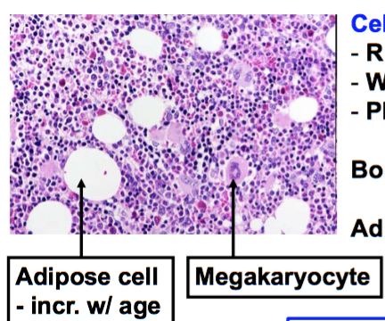
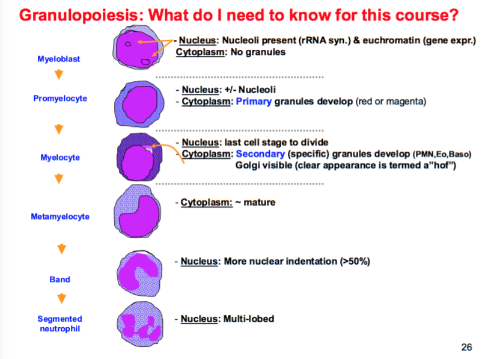

Hematopoeisis
Hemopoeisis includes erythropoeisis (RBC formation), leukopoiesis (formation of granulocytes and monocytes), and thrombopoeisis. Occurs in the Bone Marrow.
- Erythroids => RBCs
- Myeloids => Thrombocytes, Granulocytes, and Monocytes
- Myeloid:Erythroid Ratio = 3:1
All blood cells originate from Hematopoetic Stem Cells
- CD34 positive, which can be used for cell sorting for transplantation

Hematopoesis in utero:

Hierarchy of Progenitor Cells:
- Hematopoeitic Stem Cell
- Common myeloid progenitor
- Granulocyte / Macrophage Progenitor (stimulated by GM-CSF)
- Dendritic Cells
- Granulocytes (PMNs, Basophils, Eosinophils) (stimulated by G-CSF)
- Monocytes (stimulated by M-CSF)
- Megakaryocyte / Erythrocyte Progenitor
- RBCs (stimulated by EPO)
- Plateletes (stimulated by TPO)
- Granulocyte / Macrophage Progenitor (stimulated by GM-CSF)
- Common lymphoid progenitor
- Dendritic Cells
- T cells (thymosin signaling in thymus)
- B cells (develop in bone marrow under IL-7 signaling)
- NK cells
- Common myeloid progenitor
Erythropoiesis

- Way to think about changes:
- Proerythroblast = making the RNA for future protein synthesis, thus nucleoli present
- Basophilic erythroblast = RNA is done (nucleoli are gone) and is being used for protein synthesis (basophilic cytoplasm)
- Orthochromic erythroblast = protein synthesis is done (no basophilia), and nucleus is shrinking to soon disappear
- Note that this may be present in circulation as a nucleated RBC in abnormal circumstances (hemolytic anemias like hereditary spherocytosis, WAIHA)
- Reticulocyte = larger, some ribosomes still left
- Only RBCs and Reticulocytes found in peripheral blood normally (retic count ~ 1% of RBC number)
- Erythropoeisis is under negative feedback from oxygen delivery to renal tubular cells, which secrete EPO in response to low oxygen sensing
Granulopoeisis

- Bands (immature PMNs) are present in the peripheral circulation
- Seperation between PMN, eosinophil, and basophil development occurs at the myelocyte stage
Thrombopoeisis
Platelets break off from Megakaryocytes that are near sinusoids in the bone marrow, which connect to the bloodstream
- Megakaryoctyes reside in endothelial cell wall
- Regulation of Platelet release by TPO:
- The liver releases TPO, which binds to TPO-receptors on both circulating platelets and megakaryocytes
- Decreased platelets in the blood => less binding of TPO to platelets => more binding of TPO to megakaryocytes => stimulation of thrombopoeisis
Bone Marrow Biopsies and Bone Marrow Failure
Bone marrow biopsies are assessed for:
- Cellularity
- Normality of cell production (can be disturbed by megaloblastic changes in folate or B12 deficiency)
- Megaloblastic change = delayed nuclear maturation relative to the cytoplasm, Howell-Jolly bodies
- M:E ratio (normally 3:1)
- Abnormal cells (leukemias, multiple myelomas, metastatic disease)
Bone Marrow Failure
A failure in the production of RBCs, WBCs, Platelets => Pancytopenia
Causes:
- Aplastic anemia
- Idiosyncratic and rare reaction to chloramphenicol (this is why it's not used unless life-threatening infection)
- Fifth disease from parvovirus B19 => aplastic anemia in utero (but not common)
- Myelophthisic Anemia - crowding out of bone marrow due to infiltration of tumor, granuloma, histocytes, fibrosis
- Inherited disorders
- Fanconi anemia
- Dyskeratosis congenita
- Schwachman-Diamond syndrome